Mip Map Generation¶
You can generate different MIP map level for the original image by selecting the image (Ruby.bmp in this example) on the project explorer and then click on the “Generate MIP Map” button on the Application Toolbar.
Note: Only one image on the project explorer can be selected for MIP map generation at one time.
A Generate MIP Maps window will appear.
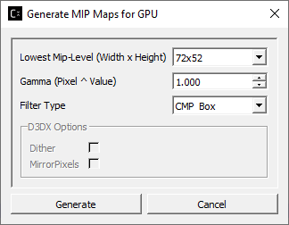
Select the desired Mip-Level for MIP map generation from the drop down list. This drop down list is generated based on the selected original image and the intended targets EncodeWith options (CPU or GPU based). Select the lowest mip-level you want to generate, then press the Generate button.
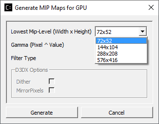
When MIP map generation completes, 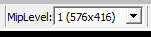 will appear in Image View toolbar. Click on the little triangle to expand the drop down list.
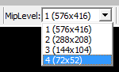
You can select the view of each MIP level from the list.
For example, selecting the level 3 will update the current image view as shown below
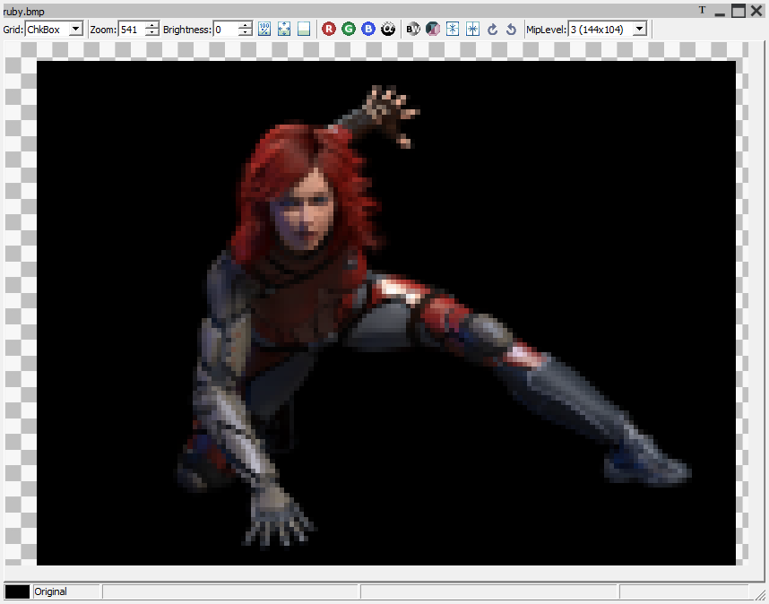
Image View of Ruby BMP file at Mip Level 3
You can always re-generate MIP map for the same image by repeating the all the steps mentioned in this section.
MIP Map Filter Support Using either GPU or CPU¶
The GUI applications “Generate MIP Map” option can be used on a variety of image formats to produce MIP maps filtered for optimal GPU or CPU use.
Options for using a Compressonator Box filter or DirectX® based filters are provided.
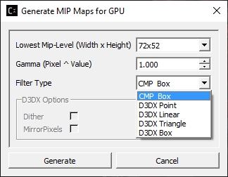
Applying Gamma to MIP Maps¶
Gamma correction can be applied to the image pixels after MIP map generation by changing the default 1.0 value higher (darken the image) or lower (brighten the image).
GPU Based Compression and MIP Map generation¶
An alternative option to generate MIP map levels is provided using the application setting window. A feature to encode textures using just the GPU hardware and its driver components is provided. The encoding process uses no user application shader code to process the textures. Both the GUI and Command-line tools can run BCn GPU extensions provided by most GPU vendors and can be used to evaluate the quality and performance of encoded images using the image views and analysis setting.
Just enable the GUI “Application Settings” options to set the encoding with GPU and optionally set generating GPU based mipmaps as shown:
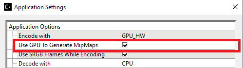
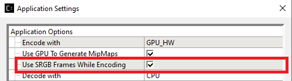
Once the images are processed users can view the quality of the resulting images with the applications image view PSNR feature,
Cube Maps¶
Cube Maps can be compressed with or without MIP Levels. Only a limited set of texture types (RGBA_8888 and RGBA_F16) are currently supported in DDS and KTX file formats. Compressing, Generating MIP Levels and Viewing Cube Maps uses the same process as image textures. Just place the file onto the Project Explorer and process them as required.
A new notation is used for the cube faces labeled as “Frames” for each cube face. For cube mapped files maximum frames is set to 6. Support for volumetric texture files is been reviewed and the frames limit will be expanded as needed.
When textures are added to the Project Explorer, the properties view will now display the type of texture as either a 2D or Cube Map, The Depth field is used for the frames size, the Depth field will also be used to indicate the z component of a 3D image (These notations may change in future revisions).
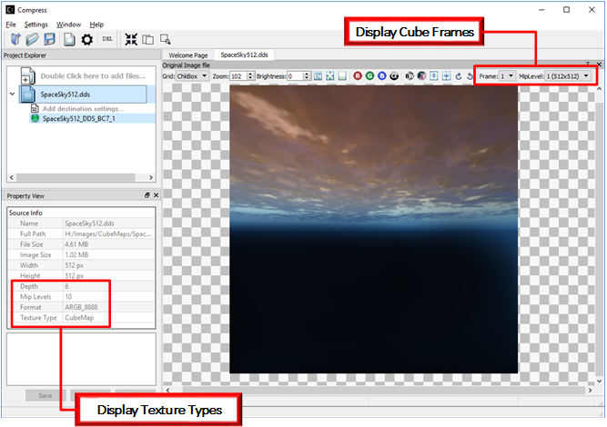
View Image Difference¶
To view the difference between a processed image (Ruby_bmp_1) and original image (Ruby_bmp), right mouse button click on Ruby_bmp_1 and select View Image Diff from the context menu or select the View Image Diff Icon on the tool bar 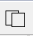
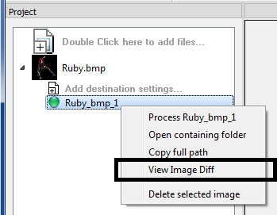
Mouse right mouse button click over Ruby_bmp_1 showing Context menu
You will now see a comparison of the original image with the compressed image
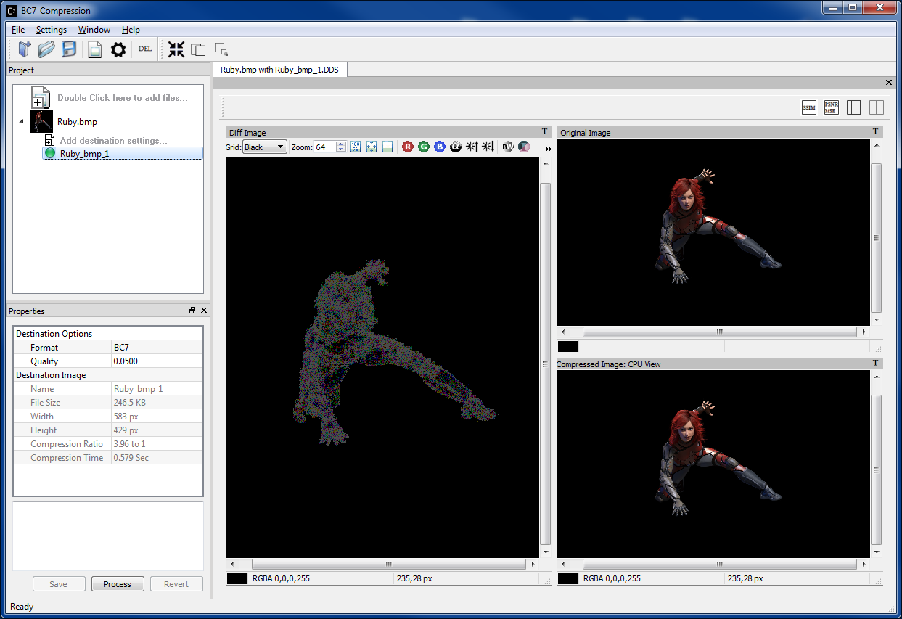
Image Difference view
Note: The windows in this view are not movable.
Analyzing Compressed Images¶
After clicking View Image diff, you can run analysis on the images that show various statistics such as MSE, PSNR and Similarity Indices (SSIM) by selecting 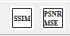 on the top right corner of the image diff view.
When analysis process completed, the statistics result will be shown on the Property View
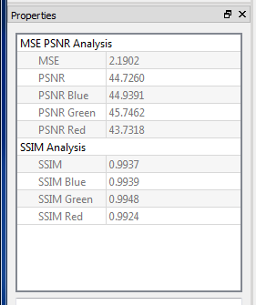